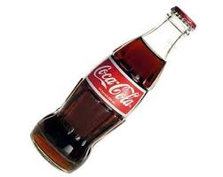

COCA COLA
Para refrescar o seu dia!!!

Coca-Cola é um refrigerante carbonatado vendido em lojas, restaurantes, mercados e máquinas de venda automática em todo o mundo. Ele é produzido pela The Coca-Cola Company, sediada em Atlanta, Estados Unidos, e é muitas vezes referido apenas como Coca-Cola (a marca registrada da empresa Coca-Cola nos Estados Unidos desde 27 de março de 1944). Originalmente concebida como um remédio patenteado quando foi inventada no final do século XIX por John Pemberton, a Coca-Cola foi comprada pelo empresário Asa Griggs Candler, cujas táticas publicitárias levaram a bebida ao domínio do mercado de refrigerantes no mundo ao longo do século XX.
A empresa produz o produto concentrado, que depois é vendido para engarrafadores licenciados pela Coca-Cola em todo o mundo. Os engarrafadores, que detêm contratos de exclusividade territorial com a empresa, colocam a bebida concentrada em latas e garrafas junto com água filtrada e adoçantes. Os engarrafadores, em seguida, vendem, distribuem e comercializam a Coca-Cola para lojas de varejo e máquinas de venda automática.A The Coca-Cola Company, também produz outros refrigerantes com a marca Coca-Cola. O mais comum deles é a Coca-Cola Diet, além de outros, como a Coca-Cola sem cafeína, a Coca-Cola Diet sem cafeína, a Coca-Cola de cereja, a Coca-Cola Zero e versões especiais com limão ou café. Em 2013, os produtos Coca-Cola podiam ser encontrados em mais de 200 países ao redor do mundo, com mais de 1,8 bilhão de doses de bebidas da empresa consumidas diariamente.[1] Com base na pesquisa da Interbrand em 2011, a Coca-Cola foi considerada a marca mais valiosa do mundo.[2]Em 2022, a The Cola-Cola Company apareceu em quinto lugar do ranking que reúne as 100 marcas mais valiosas do mundo da Interbrand. À época do levantamento, a empresa contava com um valor de mercado de US$ 57,5 bilhões. [3] A empresa produz o produto concentrado, que depois é vendido para engarrafadores licenciados pela Coca-Cola em todo o mundo. Os engarrafadores, que detêm contratos de exclusividade territorial com a empresa, colocam a bebida concentrada em latas e garrafas junto com água filtrada e adoçantes. Os engarrafadores, em seguida, vendem, distribuem e comercializam a Coca-Cola para lojas de varejo e máquinas de venda automática.A The Coca-Cola Company, também produz outros refrigerantes com a marca Coca-Cola. O mais comum deles é a Coca-Cola Diet, além de outros, como a Coca-Cola sem cafeína, a Coca-Cola Diet sem cafeína, a Coca-Cola de cereja, a Coca-Cola Zero e versões especiais com limão ou café. Em 2013, os produtos Coca-Cola podiam ser encontrados em mais de 200 países ao redor do mundo, com mais de 1,8 bilhão de doses de bebidas da empresa consumidas diariamente.[1] Com base na pesquisa da Interbrand em 2011, a Coca-Cola foi considerada a marca mais valiosa do mundo.[2]Em 2022, a The Cola-Cola Company apareceu em quinto lugar do ranking que reúne as 100 marcas mais valiosas do mundo da Interbrand. À época do levantamento, a empresa contava com um valor de mercado de US$ 57,5 bilhões. [3] A empresa produz o produto concentrado, que depois é vendido para engarrafadores licenciados pela Coca-Cola em todo o mundo. Os engarrafadores, que detêm contratos de exclusividade territorial com a empresa, colocam a bebida concentrada em latas e garrafas junto com água filtrada e adoçantes. Os engarrafadores, em seguida, vendem, distribuem e comercializam a Coca-Cola para lojas de varejo e máquinas de venda automática.A The Coca-Cola Company, também produz outros refrigerantes com a marca Coca-Cola. O mais comum deles é a Coca-Cola Diet, além de outros, como a Coca-Cola sem cafeína, a Coca-Cola Diet sem cafeína, a Coca-Cola de cereja, a Coca-Cola Zero e versões especiais com limão ou café. Em 2013, os produtos Coca-Cola podiam ser encontrados em mais de 200 países ao redor do mundo, com mais de 1,8 bilhão de doses de bebidas da empresa consumidas diariamente.[1] Com base na pesquisa da Interbrand em 2011, a Coca-Cola foi considerada a marca mais valiosa do mundo.[2]Em 2022, a The Cola-Cola Company apareceu em quinto lugar do ranking que reúne as 100 marcas mais valiosas do mundo da Interbrand. À época do levantamento, a empresa contava com um valor de mercado de US$ 57,5 bilhões. [3]